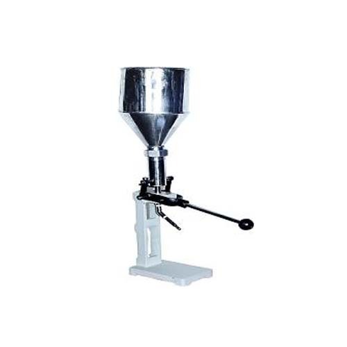
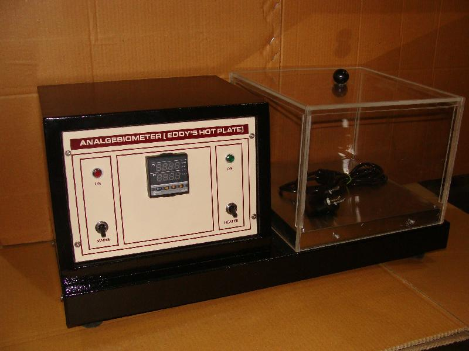
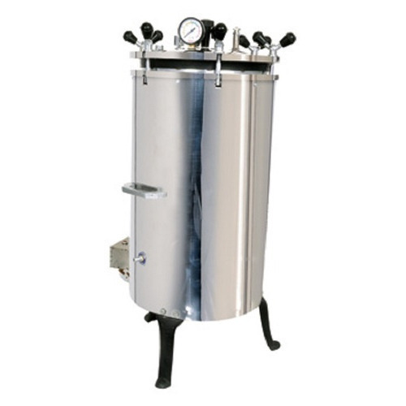
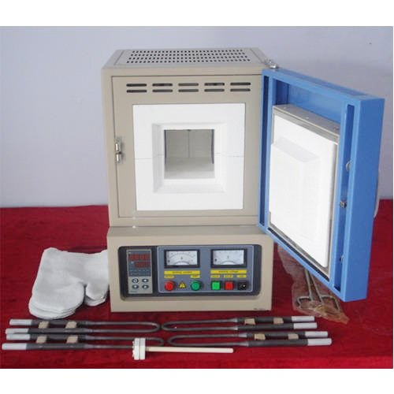
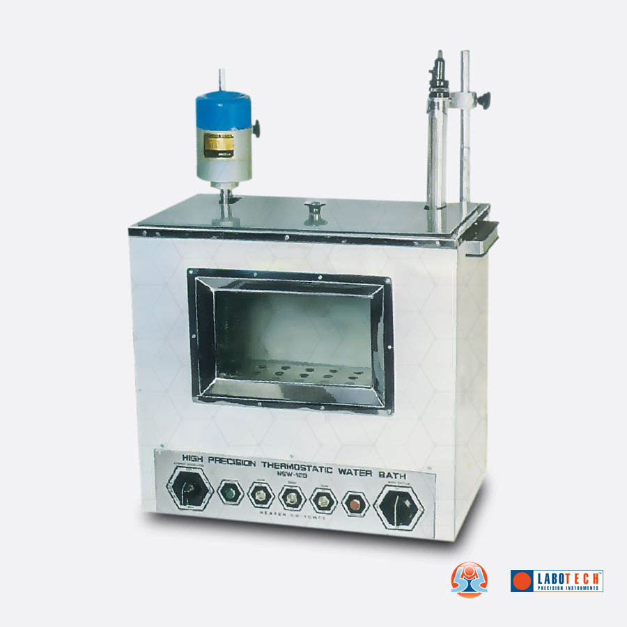

Collapsible Tube Filling Machine
$1050.00
Collapsible tube filling machine Stroke type, barrel and piston arrangement with stroke.
Setting for various capacity of filling of tubes (from 5 gms to 50 gms) and detachable nozzles provided for each separate capacity.
All contact parts are of stainless steel, built on cast iron body and hand lever operated.
(WORK ON 220 VOLT)

Analagesio Meter (Eddy's Hot Plate)
$2,375.00
Eddy's Hot Plate with square box consisting of 30x30 cms.
Heating surface with perspex enclosure and solid state digital temperature.
Controller with indicating galvanometer to set surface temp.
Between 300 to 800

Autoclaves Laboratory (Portable) S.S
$375.00 – $550.00
Suitable for general laboratory use and sterilization.
Stainless steel or aluminium vertical body having no joints.
Pressure range 15 psi to 18 psi.
Supplied complete with plug & cord and is suitable to work on 220 V AC 50 Hz single phase.

Rectangular Muffle Furnace (Laboratory Model) v
$499.00
Maximums temperature 1000oC.
Complete with CI/AL themocouple with pyrometer, thermal fuse etc.
Size : 225 x 100 x 100 (9" x 4" x 4")
Work With 220 Volt.

Water Bath Precission (Constant Temp. Control)
$800.00 – $1300.00
A high speed stirrer with a motor.
The unit for continuous stirring and thus maintaining a uniform temperature throughout.
A speed regulator is provided on the front panel to control speed of the stirrer the heating.
Mechanism comprises of set of heaters a sensitivity of + 0.1° C + 1 micro proceer based p I d controller from ambient to 100° C.